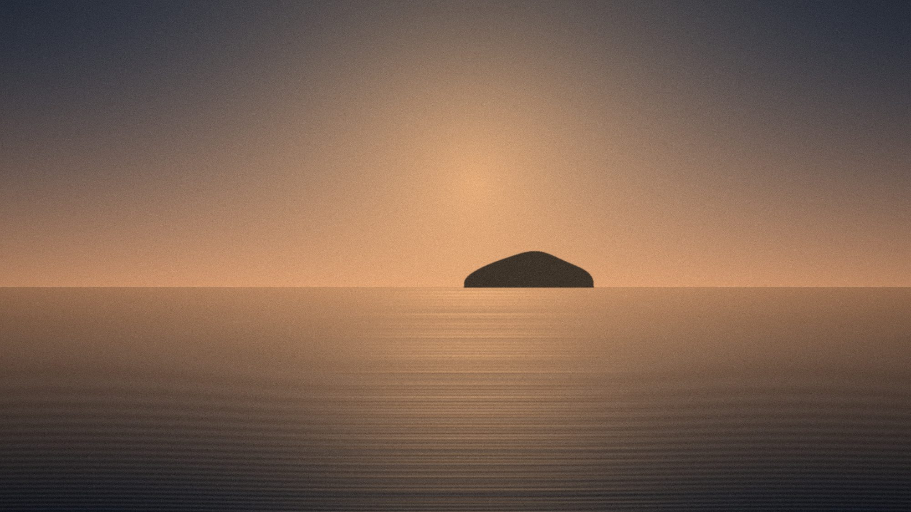
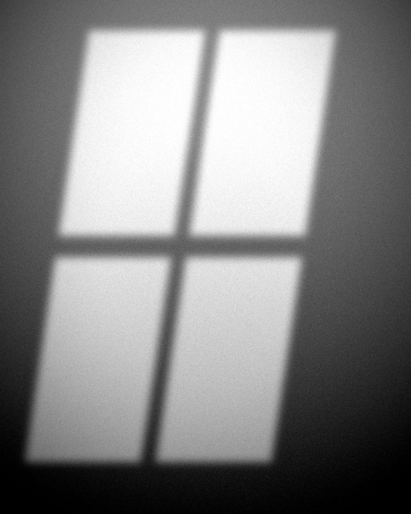

Pequeña
90 €
- 30 × 45 cm, sin marco
- Papel Hahnemühle Photo Rag 308 g
- Firmada y numerada a mano
Costa, montaña, bosque y cielo nocturno. Copias de autor numeradas y encargos para editoriales, marcas y turismo.
Fisterra al caer el sol Fisterra, A Coruña — f/11 · 1/250 s · ISO 100 · 70 mm
Tres inviernos recorriendo la costa entre Malpica y Fisterra a la hora en que el sol cae detrás de los farallones. Sin filtros de color: solo la luz que hay cuando casi nadie mira.
La serie se expuso en la Sala de Arte de Fisterra y forma parte de la colección de copias de autor.

Cualquier foto del portfolio, impresa en papel de algodón, firmada y numerada. Edición limitada a 25 copias por tamaño.
90 €
190 €
340 €
Envío en tubo rígido a toda España en 5–7 días. Otros tamaños, bajo petición.

Soy Iria, fotógrafa de paisaje desde hace doce años. Trabajo casi siempre en Galicia, casi siempre con trípode y casi siempre a horas en las que no hay nadie más.
Además de las copias de autor, hago encargos para editoriales, oficinas de turismo y marcas que necesitan contar un lugar, y organizo salidas fotográficas en grupos pequeños.
“La copia de Fisterra preside el salón desde hace dos años y todavía hay quien se para delante.”
Respondo en menos de 48 horas, normalmente antes.